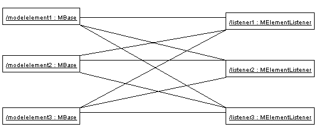
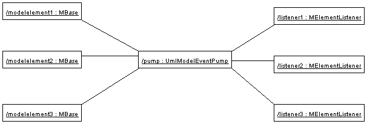

- Purpose
- To remove knowledge from the rest of ArgoUML of what model repository is in use (e.g. MDR, EMF/UML2, NSUML) and to give a consistent interface for manipulating data within those repositories.
- Located
org.argouml.model
- Layer
- Facade classes
org.argouml.model.Model, org.argouml.model.*Factory, org.argouml.model.*Helper
- See also
Public API
The Model class provides the rest of ArgoUML with various interfaces through which ArgoUML can manipulate the repository.
The Model subsystem manages the well-formedness rules for the data in the repository for those well-formedness rules that are considered important to enforce.
Currenty there are factory and helper interfaces for controlling the lifetime and properties of elements in the repository.
An interface is also made available to the Diagram Interchange Model should the repository implementation contain such.
A ModelEventPump interface is provided through which ArgoUML can listen for changes in the repository in a consistent way. Implementations of this pump convert from the repository specific events to PropertyChangeEvents.
The factories contain all methods that deal with creating and building model elements. The helpers contain all utility methods needed to manipulate the model elements. Per section of the semantics chapter of the UML specification there is one factory and one helper.
Design of the subsystem
The Model is a Model subsystem according the MVC pattern (Model-View-Control).
Currently there is a full implementation using NetBeans MDR to store the OMG UML 1.4 metamodel. The previous implementation used the NSUML library to implement a UML 1.3 metamodel. Since the 0.29.x releases, there is also an implementation using eclipse UML2 and EMF for the OMG 2.x metamodel. It begun in 2007 as a GSoC work an is called eUML since then. This implementation is incomplete, but will eventually evolve into the first ArgoUML release with stable UML 2.x support.
The decision of which implementation to use is controlled by the Model class which contols the implementations as alternative strategies (as in the Strategy Pattern - GOF p315)
Both helpers and factories (and the Facade and ModelEventPump) are interfaces that are fetched through static methods in the Model object.
Because the same interface is used internally each implementation must provide objects for each of these interfaces.
Factories
Create and Build
The factories contain in most cases a create method for each model element. Example: createClass resides in CoreFactory-interface.
Besides that, there are several build methods to build classes. The build methods have a signature like public Object buildMODELELEMENTNAME(params);.
Each build method is intended to follow the wellformedness rules as defined in the UML spec. The reason for having extra build methods, is that the model repository does not enforce the wellformedness rules even though, in some cases, non-well-formed UML can lead to non-well-formed XMI which leads to saving/loading issues and all kinds of illegal states of ArgoUML.
If you want to create an element you shall use the build or create methods in the factories. You are strongly advised to use a build method or, if there is none that suits your needs, to write a new one reusing the already existing build methods and utility methods in the helpers. The reason for this is that the event listeners for the newly created model element are setup correctly.
Copy and DoCopy
The factories also contain methods that deal with copying modelelements. They are not supposed to be called directly from outside the model-subsystem, but only from the CopyHelper-implementation. The CopyHelper has one method that copies any modelelement into a new "location" (mostly a namespace). This method determines the type of element to copy, and then dispatches the call to the appropriate method of a Factory that is named in a similar way to copyClass.
The responsibility of the copyModelElement method is to create the new element (with createModelElement) and set the containment. Then, if necessary, sub-elements are to be created. E.g. the CoreFactoryMDRImpl. copyEnumeration method also creates EnumerationLiterals, with the createEnumerationLiteral method.
Then a next method is called to copy all the attributes from the old element to the newly created one: doCopyModelElement. This type of method shall only set attributes and lay associations, but not create any more elements.
The implementation of these copy related methods is far from complete. Only the CoreFactory already has the most important functions.
Multi-threading
Question: Am I allowed to call the factories from any thread? Answer: The current checks are not written to allow for multiple threads so don't!
Helpers
The helpers contain all utility methods for manipulating model elements. For example, they contain methods to get all model elements of a certain class out of the model (see getAllModelelementsOfKind in ModelManagementHelper).
To find a utility method you need to know where it is. As a rule of thumb, a utility method for some model element is defined in the helper that corresponds with the section in the UML specification. For example, all utility methods for manipulating classes are defined in CoreHelper.
There are a few exceptions to this rule, mainly if the utility method deals with two model elements that correspond to different sections in the UML specification. Then you have to look in both corresponding helpers and you will probably find what you are searching for.
Question: Am I allowed to call the helpers from any thread? Answer: The current checks are not written to allow for multiple threads so don't!
The model event pump
Introduction
In late 2002, the existing NSUML model implementation was encapsulated with a new interface to separate it from the main ArgoUML application. This interface consists of three parts:
- The model factories, responsible for creation and deletion of model elements
- The model helpers, responsible for utility functions to manipulate the model elements and
- The model event pump, responsible for sending model events to the rest of ArgoUML.
The model factories and the model helpers are described in Section “Factories” and Section “Helpers” respectively.
In the beginning of 2003, in the work to replace NSUML, the need was seen for this interface to not use any NSUML classes. The ModelFacade was introduced to wrap model factories, model helpers, and direct calls to NSUML but not the model event pump. In April 2004 a ModelEventPump-interface was introduced to wrap the UmlModelEventPump using PropertyChangeEvents.
The model event pump is the gateway between the model elements and the rest of ArgoUML. Events fired by the model elements are caught by the pump and then 'pumped' to those listeners interested in them. The main advantage of this strategy is that the registration of listeners is concentrated in one place (see picture *). This makes it easier to change the interface between the model and the rest of ArgoUML.
Besides this, there are some improvements to the performance of the pump made in comparison to the situation without the pump. The main improvement is that you can register for just one type of event and not for all events fired by some model element. In this respect the pump works as a filter.
The model event pump replaces all other event mechanisms for model events.
 
Public API
A model event (from now on a Event) has a name that uniquely identifies the type of the event. In most cases the name of the Event is equal to the name of the property that was changed in the model. In fact, there is even a 1-1 relationship between the type of Event and the property changed in the model. Therefore most listeners that need Events are only interested in one type of Event since they are only interested in the status of one property.
You can not make any assumptions about the thread on which the event will be delivered. In the MDR implementation, events are delivered on the MDR event dispatching thread which is guaranteed to be different than the Swing/AWT event dispatching thread, so you must not call any non-thread-safe Swing methods (ie most of them). TODO: is there something I cannot do from the event thread?
In the case described above (the most common one) you only have to subscribe with the pump for that type of event. This is explained in section Section “ How do I register a listener for a certain type event ” and Section “How do I remove a listener for a certain event”
Besides the case that you are interested in only one type of event (or a set of types), there are occasions that you are interested in all events fired by a certain model element or even for all events fired by a certain type of model element. For these cases, the pump has functionality too. This is described in section Section “ Hey, I saw some other methods for adding and removing? ”.
How do I register a listener for a certain type event
This is really very simple. Use the model
addModelEventListener(PropertyChangeListener listener, Object modelelement,
String eventName)
like this:
Model.getPump().addModelEventListener(this, modelelementIAmInterestedIn,
"IamInterestedInThisEventnameType");
Now your object this gets only the Events fired by modelElementIAmInterestedIn that have the name IamInterestedInThisEventnameType.
How do I remove a listener for a certain event
This is the opposite of registering a listener. It all works with the method
removeModelEventListener(PropertyChangeListener listener, Object modelElement, String eventName)
on the ModelEventPump like this:
Model.getPump().removeModelEventListener(this, modelelementIAmInterestedIn, "IamInterestedInThisEventnameType");
Now your object is not registered any more for this event type.
Hey, I saw some other methods for adding and removing?
Yes there are some other method for adding and removing. You can add a listener that is interested in ALL events fired by a certain model elements. This works with the method:
addModelEventListener(PropertyChangeListener listener, Object modelelement)
As you can see, there are no names of events.
Furthermore, you can add a listener that is interested in several types of events but coming from 1 model element. This is a convenience method for not having to call the methods explained in section Section “ How do I register a listener for a certain type event ” more than once. It works via:
addModelEventListener(PropertyChangeListener listener, Object modelelement,
String[] eventNames)
You can pass the method an array of strings with event names in which your listener is interested.
Thirdly there is a very powerful method to register your listener to ALL events fired by a ALL model elements of a certain class. You can understand that using this method can have severe performance impacts. Therefore use it with care. The method is:
addClassModelEventListener(PropertyChangeListener listener, Object modelClass)
There are also methods that allow you to register only for one type of event fired by all model elements of a certain class and to register for a set of types of events fired by all mod elements of a certain class.
Of course you can remove your listeners from the event pump. This works with methods starting with remove instead of add.
Tips
- Don't forget to remove your listener from the event pump if it's not interested in some event any more.
- If you do not remove it, that's gonna cost performance and it will give you a hard time to debug all the logical bugs you see in your listener.
- When you implement your listener, it is wise to NOT DO the following:
propertyChanged(MElementEvent event) { // do my thing for event type 1 // do my thing for event type 2 // etc. }- This will cause the things that need to be done for event type 1 to be fired when event type 2 happens.
This still happens in a lot of places in the code of ArgoUML, most notably in the modelChanged method of the children of FigEdgeModelElement.
Possible investigation points and improvements
Should we use our own event types?
Should we replace the MElementListener with PropertyChangeListener and MElementEvent with PropertyChangeEvent? One reason we have not done so yet is that it involves a lot of work and testing.
Should we change the implementation of the Event pump itself? Not the API but the implementation!
At the moment the event pump does not use the AWT Event Thread for dispatching events. This can make ArgoUML slow (in the perception of the user).
Use the standard data structure that Swing uses for event registration (i.e. javax.swing.EventListenerList). Would this be an improvement?
NSUML specifics
Up to version 0.18.1, ArgoUML used the NSUML model repository internally to implement the UML model. Since version 0.19.1, the NSUML implementation was replaced with the NetBeans Model Data Repository (MDR) which implements the JSR-040 Java Metadata Interface.
The use of IDs in MDR
All changes to the MDR repository are effectively serialized in the form of change events. The ArgoUML Model-MDR subsystem gets notified before each change with the contents of the change that is about to be made and then again after the change is made. The latter is what we propogate back to the ArgoUML application as model subsystem events.
UUIDs aren't used internally by MDR. We only maintain UUIDs because PGML requires them. MDR has two types of IDs: 1) MOF ID - managed by the repository and guaranteed unique within it for the life of the repository, and 2) xmi.id - used within a single XMI file to link various items together (type references, etc). What gets called a "UUID" is actually the MOF ID of the creating repository. We maintain an internal mapping that gets created every time a new XMI file gets read to map from this "UUID" to the current internal MOF ID.
How to work against the model
The Model subsystem is a set of classes that lay between the model implementation (e.g. MDR) and the rest of ArgoUML that hides the APIs of the implementation. It was originally implemented to provide the ability to switch between NSUML and MDR. This is the API classes of the Model subsystem i.e. Factories, Helpers, Event Pump (where to register for changes).
Here follows a list of how different things were done to make the transition easy. Everything within ArgoUML should access the Model subsystem through the interfaces in the org.argouml.model package. The NSUML or MDR and whatever other implementation we eventually come up with would provide the implementation of those interfaces.
Table 5.1. How to work against the model
What |
NSUML (use only within Model subsystem) |
MDR (use only within Model subsystem) |
Model subsystem |
Test that an Object o has a certain type |
o instanceof Mmodelelementtype → boolean |
???CLASSNAME???.isInstanceOf(?RefObject toTest, String className) → boolean |
Model.getFacade().isAmodelelementtype(o) → boolean |
Get a single valued model element from an Object o |
((Mmodelelementtype)o).getproperty() → model element |
((?RefFeatured)obj).refGetValue(String propName) → ???Type??? |
Model.getFacade().getproperty(o) → Object |
Get a multi valued property from an Object o |
((Mmodelelementtype)o).getproperty() → Collection |
((?RefFeatured)obj).refGetValue(String propName) → Collection |
Model.getFacade().getproperty(o) → Iterator or Collection (total confusion!) |
Create a new model element of type Type: |
MFactory.getDefaultFactory().createType() |
???CLASSNAME???.creatInstance(String "Type", List argument) → ?RefObject |
Model.getModelElementDomain?Factory.buildmodelelementtype(args) or Model.getModelElementDomain?Factory.createmodelelementtype() to create them completely empty. |
Delete a model element |
|
|
Model.getUmlFactory().delete(object) ... but only call this function from Project.moveToTrash(Object). |
Register for notification that a model element Object o has changed: |
((MBase) o).addMElementListener(MElementListener el) |
((MDRChangeSource) obj).addChangeListener(???) |
Model.getPump().addModelEventListener((?PropertyChangeListener)li, Object o, String[] eventnames) |
Register for notification on all model elements of a certain type Type: |
Not possible! |
((MDRChangeSource)obj.refClass()).addChangeListener(???) |
Model.getPump().addModelEventListener((?PropertyChangeListener)li, (Object)Model.getMetaTypes().getMODELELEMENTTYPE(), String[] eventnames) |
How do I get the model as XMI on the stream Stream: |
(new XMIWriter(MModel m, Writer Stream)).gen() |
new XMIWriter(???) |
Handled by the Persistence subsystem. |
How do I...?
- ...add a new model element?
Make a parameterless build method for your model element in one of the UML Factories (for instance ?CoreFactory). Use the UML 1.4 spec to choose the correct Factory. The package structure under org.argouml.model follows the chapters in the UML spec so get it and read it! In the build method, create a new model element using the appropriate create method in the factory. The build method e.g. is a wrapper around the create method. For all elements there are already create methods (thanks Thierry). For some elements there are already build methods. If you need one of these elements, use the build method before you barge into building new ones. Initialize all things you need in the build method as far as they don't need other model elements. In the UML spec you can read which elements you need to initialize. See for example buildAttribute() for an example.
- If you need to attach other already existing model elements to your model element make a buildXXXX(MModelelement toattach1, ...) method in the factory where you made the build method. Don't ever call the create methods directly. If we use the build methods we will always have initialized model elements which will make a difference concerning save/load issues for example.
- Now you probably also need to create a Property Panel and a Fig object (See Section 5.3.3.5, “Creating a new Fig (explanation 2)”).
- ...create a new create method?
- Create it in the correct factory.
- ...create a new utility method?
- Create it in the correct helper.
- ...delete a model element?
- Project.moveToTrash(Object obj).
- (See issue 2353.)
Code Example
See the Code example for model subsystem usage.